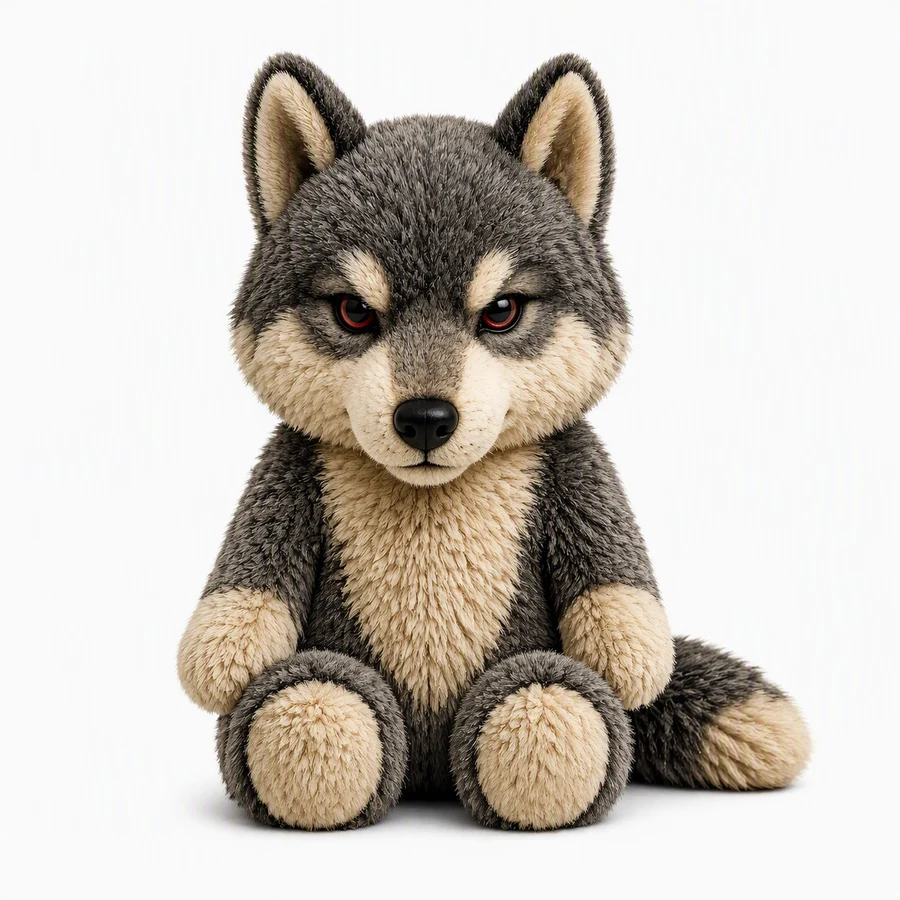

Waarom u zich zou willen inschrijven
Het onderzoek naar mythes, sagen en volksverhalen over de wolf in Nederland en Vlaanderen groeit iedere week. Via de nieuwsbrief deelt Marc van der Sterren de meest opvallende vondsten uit de archieven van heemkundeverenigingen, de voortgang van het manuscript, en de eerste aankondigingen van lezingen — voordat ze ergens anders verschijnen.
